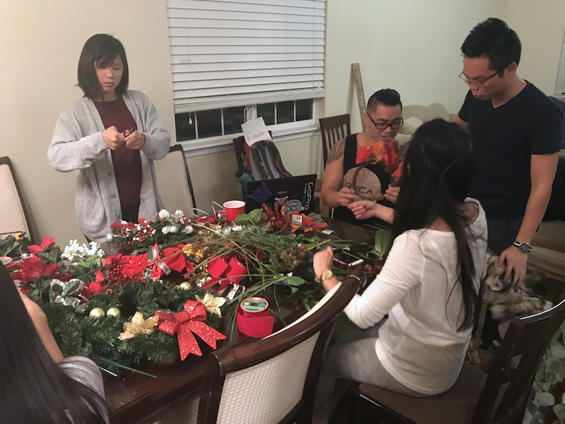
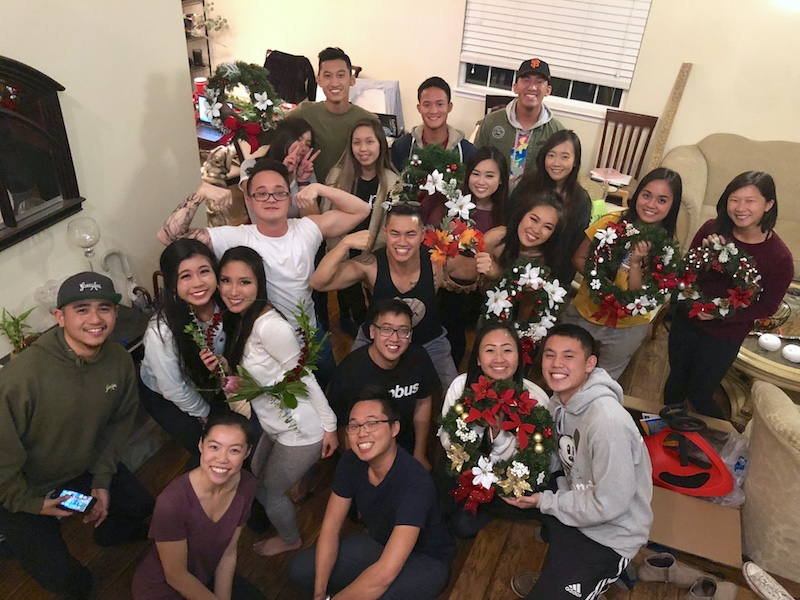
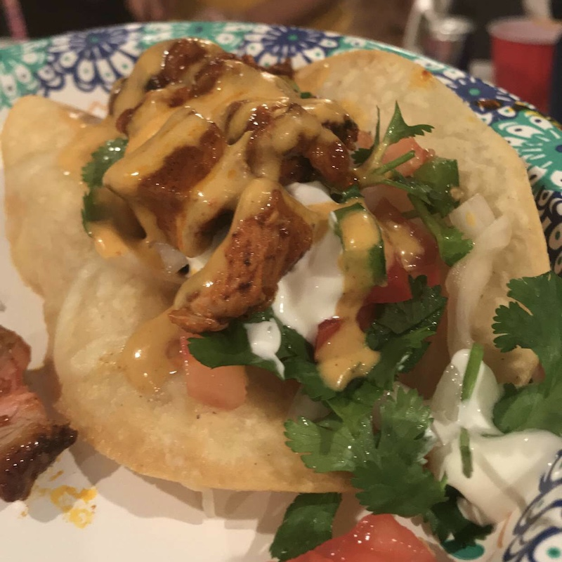

It all started when Lauren shared an event called "Fall Wreath Making" and asked if anyone wanted to do it with her. A few people commented showing that they were interested, but not for the price ($43). So why not just do it ourselves!? Before you know it, an official Facebook event was created and Brandon began watching Martha Stewart videos on how to make DIY wreaths.
Even though it was only 4 days after Halloween, wreath making definitely put us all in the Christmas spirit (it's never too early). At first it was hard to choose what to put on the wreath and how to arrange it to look good enough to land on Pinterest, but after three hours, Hung and I managed to throw together a pretty decent looking wreath. It was a great feeling singing along to Mariah Carey's Christmas album and DIY-ing with friends. And to make it even better, it only costed $5 each!
Of course no gathering is complete without the wonderful cookings of Andrew, Mi, Brandon, and Brian. I think I had the greatest crispy tacos that night (fried taco shell, ceviche, sour cream, al pastor, orange sauce, and queso). Thank you to Andrew, Mi, and Brian for always opening up their home and being the best hosts!
